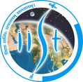

Rithik R Nambiar
MS Candidate · Aerospace Engineering · Iowa State University
I am an MS candidate in Aerospace Engineering (with thesis) at Iowa State University, specializing in computational analysis and sustainable system design.
My research portfolio spans computational aeroacoustics, offshore wind systems, and lighter-than-air systems through collaborations with leading US and Indian institutions including IIT Bombay and IIST Trivandrum.
Previously, I was a Project Research Assistant at the LTA Systems Laboratory, IIT Bombay, and completed my BTech in Aeronautical Engineering from Manipal Institute of Technology with a minor in Fundamentals of Computing.
Latest News
Experience
- Applying dynamic modeling and time-domain simulations for a novel Wave-Augmented Floating Offshore Wind Turbine (WAFOWT) system using MATLAB/Simulink and WEC-Sim to evaluate wave-body interactions and enhance platform stability.
- Teaching Assistant for AERE 3220: Aerospace Structures Laboratory (Fall 2026), guiding 30+ students through hands-on experiments in aerospace structural principles.
- Designed a novel ultrasonic bat deterrent device leveraging aerodynamic whistles to mitigate wind turbine mortality risks at wind farms.
- Enhanced understanding of aerodynamic whistle performance by conducting detailed CFD and CAA simulations, identifying key operational principles and areas for design improvement.
- Applied Multidisciplinary Design Optimization (MDO) methods using Discrete Adjoint approach with OpenFOAM (DAFoam) to enhance device performance.
- Led feasibility study on solar/wind aerostats for transmission towers, reducing potential costs by 20%.
- Optimized power generation efficiency by 15% through CFD analysis of horizontal and vertical axis turbines.
- Developed dashboard to streamline aerostat design process, reducing cycle time by 60%.
- Teaching Assistant for AE664: LTA Systems, earning positive feedback for exceptional teaching support.
- Demonstrated leadership by organizing impactful events, outreach programs, guiding interns, and strengthening project visibility.

- Conducted collaborative research employing ANSYS Fluent to dissect screech tones in supersonic jets.
- Evaluated sound pressure levels and acoustic behaviors across diverse microphone locations, providing valuable insights into aircraft performance.
- Explored the impact of Mach numbers on noise generation in supersonic jets, focusing on predicting screech tones.
- Performed design and analysis of critical aircraft components in the Wing & Empennage division, enhancing structural integrity and performance.
- Executed a focused study on gurney flaps, optimizing their application for a 15% improvement in lift coefficient.
Publications
Thesis
Education
Technical Skills
Engineering Software
Numerical Analysis
Programming
Ask Me Anything
An AI assistant trained on my portfolio. Ask about my background, research, or experience.